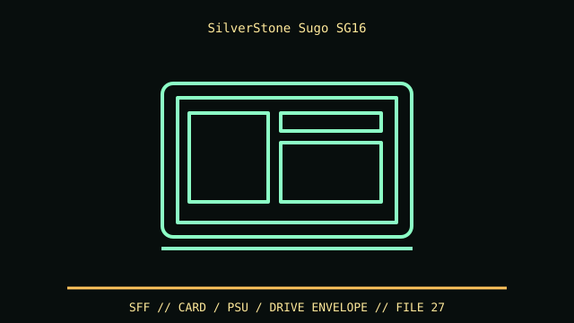

[ IDENTIFIED ENCLOSURE // SILVERSTONE SUGO SG16 COMPACT CUBE ]
SilverStone Sugo SG16
200 × 232 × 280 mm (W × H × D); GPU limit up to 275 mm, CPU cooler up to 82 mm in listed layout.

VARIANT / ARCHIVAL CAVEAT: SG16B/SG16W color variants and optional PSU bundles differ; not an SG13. Verify SFX bracket and panel color; retain feet and front filter.
Mechanical specifications and fit
| Catalog identity | SilverStone Sugo SG16 compact cube |
|---|---|
| Dimensions and clearances | 200 × 232 × 280 mm (W × H × D); GPU limit up to 275 mm, CPU cooler up to 82 mm in listed layout. |
| Drive bays / mounts | One 3.5-inch or two 2.5-inch mounts; no external optical bay. |
| Board, system and compatibility | Mini-ITX/Mini-DTX and SFX PSU; front liquid cooler/radiator reduces card length and can alter drive positions. |
| Revision / identification | SG16B/SG16W color variants and optional PSU bundles differ; not an SG13. Verify SFX bracket and panel color; retain feet and front filter. |
Preservation and installation notes
SG16B/SG16W color variants and optional PSU bundles differ; not an SG13. Verify SFX bracket and panel color; retain feet and front filter.
Mini-ITX/Mini-DTX and SFX PSU; front liquid cooler/radiator reduces card length and can alter drive positions.
- Capture the complete model/SKU, serial/date label, board assembly and bay/backplane/riser identifiers before disassembly; keep matched screws, trays, carriers, feet and cables with the case.
- Check the cited manual's specific build option before transferring hardware. Published maximum GPU, drive, fan or radiator capacity may not be simultaneous when a removable cage or alternative riser occupies that volume.
- For rack and vintage systems, preserve the exact rails, shields, doors, brackets and model-specific safety instructions; do not infer compatibility from a familiar brand or physical connector shape.
Manufacturer manuals and archival sources
- SilverStone Sugo SG16 official specificationsPrimary manufacturer or model-specific technical/manual reference used for the identification and mechanical data above.
- SilverStone SG16 manuals and variant notesSecond product manual, manufacturer resource or established technical archive; choose the exact regional SKU and revision.
When exact dimensions depend on configuration, the text says so; verify the measured specimen before making a fit or restoration decision.